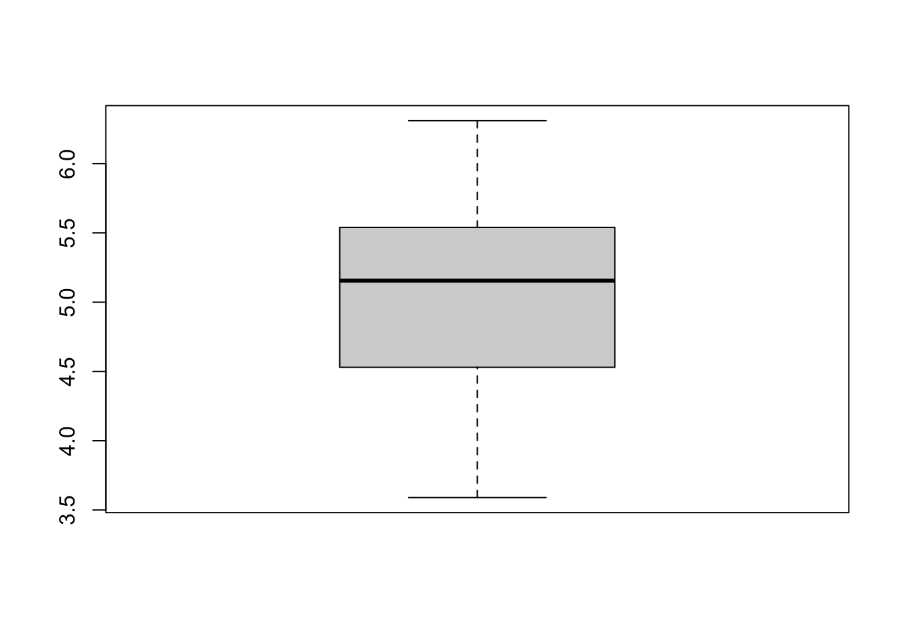
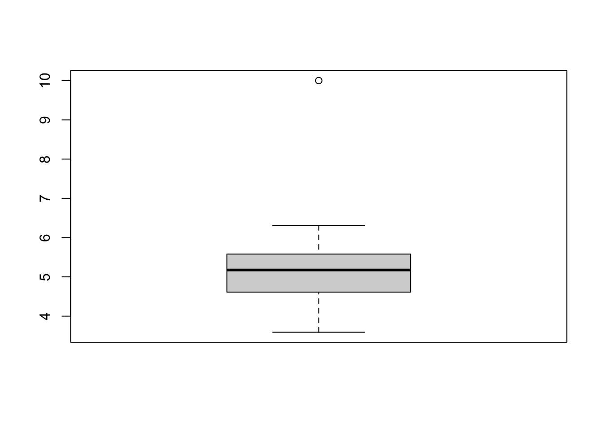
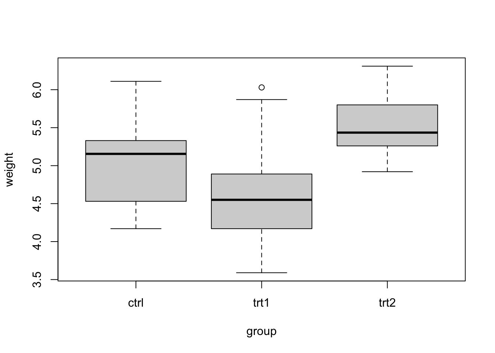
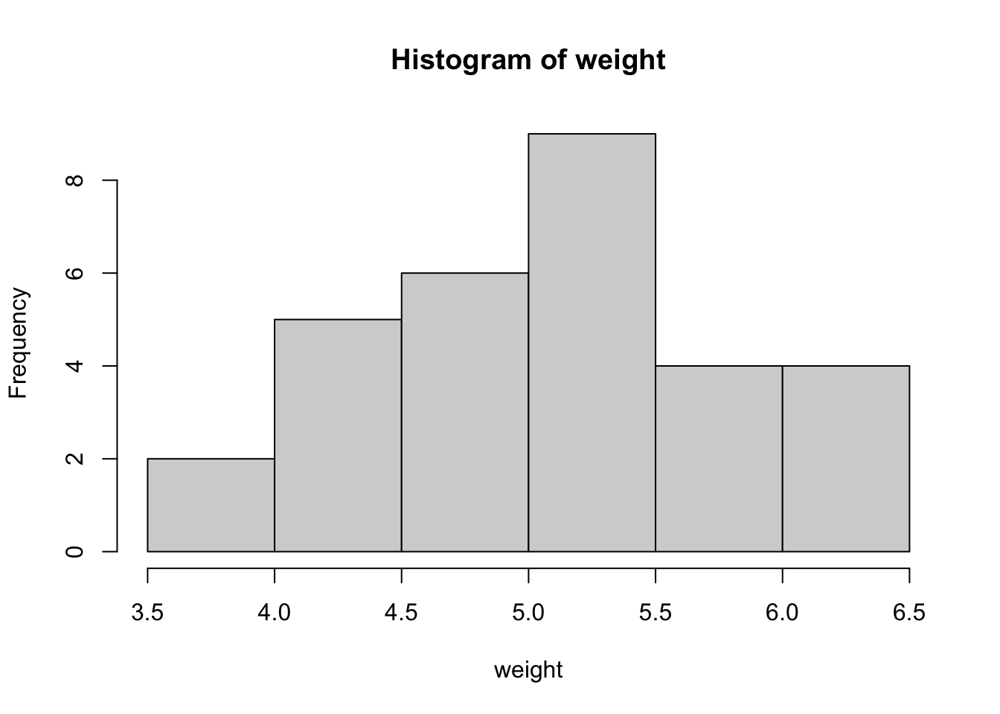
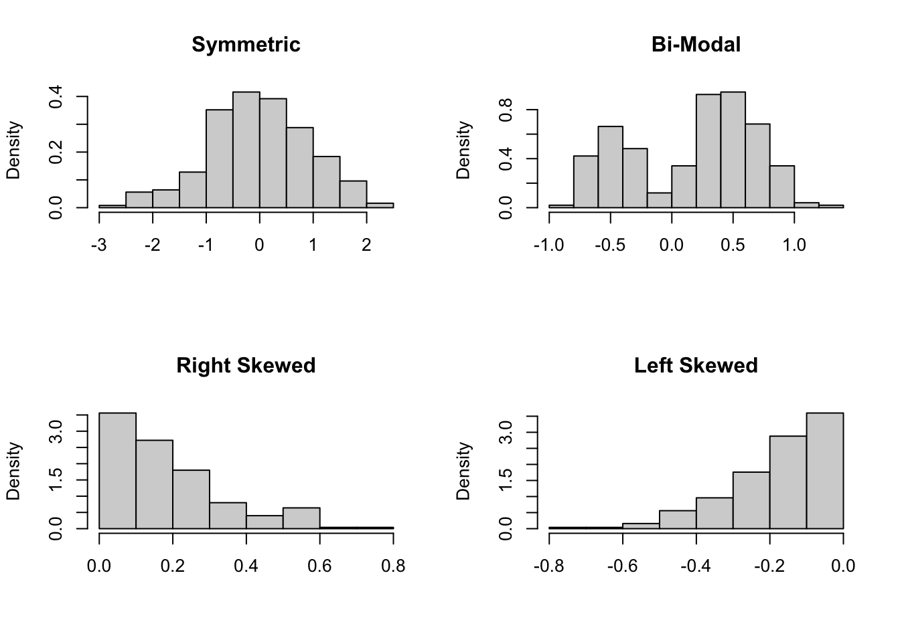

Chapter 2 Foundations
2.1 What is Statistics?
Statistics is often described as "the art and science of data." It is a set of tools for answering scientific questions of interest.
As a science, statistics relies on mathematical principles, empirical methods, and formalized procedures. It provides tools for collecting, analyzing, interpreting, presenting, and organizing data, using a systematic approach grounded in mathematical theory. From hypothesis testing to regression analysis, the scientific side of statistics offers structured ways to make inferences, draw conclusions, and make predictions based on data.
But statistics is also an art, requiring creativity, intuition, and a thoughtful consideration of context. The art of statistics lies in the ability to ask meaningful questions, design insightful studies, and communicate findings in an engaging and understandable way. It is about selecting the right method for the situation, making thoughtful assumptions, recognizing patterns and nuances in data, and telling a compelling story through numbers.
In this interplay between art and science, statistics becomes a powerful discipline that transcends mere numbers. It helps us to understand the world around us, informing decisions in fields as diverse as medicine, economics, politics, sports, and beyond. Whether you are a researcher unraveling the mysteries of a disease, a policy-maker seeking evidence for social interventions, or a business leader making data-driven decisions, statistics provides a framework that combines logical reasoning with creative thinking.
In this book, we will explore both the art and science of data, unlocking the tools and insights that make statistics such an indispensable field of study. Through real-life examples, hands-on exercises, and engaging visuals, we will uncover the beauty and complexity that lies at the heart of statistics.
2.2 Populations and Parameters, Samples and Statistics
In Statistics, we are interested in studying a particular population. This population encompasses the entire collection of people, animals, objects, or entities that are the focus of our investigation. These objects are generically referred to as units. Whether we are investigating the heights of all students at a university, the survival times of all people with a disease, or the attitudes of citizens in a country, the population is the complete set of what we aim to study.
Within the population, there is typically a specific numerical characteristic that we are interested in, called a parameter. The parameter is a value that summarizes a particular aspect of the population. For instance, the average height of all students, the median survival time after diagnosis of people with a disease, or the percentage of individuals with a specific opinion in a survey are all examples of parameters. In order to compute the value of a parameter, we would have to observe every single member of the population. This is never possible in any realistic application.
In practice, since it is not possible to observe the entire population, we draw a sample from the population. A sample is a smaller subset of individuals or items selected with care to represent the population as a whole. For example, we might select 1,000 students from the current roster of all students at a university, enroll 100 diseased people who are seen at a hospital, or contact 100,000 citizens with an online survey. By studying the sample, our goal is to learn about the population.
Using a sample, we can estimate the parameter of interest by computing a statistic. A statistic is simply a number that we compute based on sample data. For example, we could compute the average height of our 1,000 sampled students, the median survival time after diagnosis of our 100 sampled patients, or the proportion of our 100,000 sampled citizens who respond a particular way to a survey question.
Note: We are intentionally glossing over one technical point; namely, for the purposes of this book, we will assume that the population is infinite. That is, when taking a sample from a population, we do not worry about changes to the composition of the population due to some of its (finite) individuals being sampled. If the population consists of a finite collection of individuals, then, as we sample some of those individuals, there are impacts on our resulting dataset and downstream statistical analysis. As a result, much of the methodology that will be presented in what follows would need special treatment. To keep our presentation simple and broadly applicable, we avoid these technical issues and proceed under the standard assumption of an infinite (or effectively infinite) population.
2.3 Obtaining Data
In Statistics, data is the raw material from which we derive insights, make informed decisions, and reveal hidden patterns. Everything a statistician does, whether it's constructing models, drawing conclusions, or making predictions, is rooted in data. Therefore, the process of obtaining data is critical.
Since we are interested in a particular population (and one or more associated parameters), the data we gather should be representative of the characteristics of that population. By "representative of", we simply mean that our sample data should not differ from the population in any systematic way. Otherwise, any lessons we learn from analyzing our data cannot be generalized to the population.
As discussed in more detail in Section 2.4, we will generically refer to a dataset as an array with individuals (the people, animals, objects, or entities we have observed) in the rows and variables (the people, animals, objects, or entities we have observed) in the columns.
2.3.1 Sampling
Given a population of individuals, there are a variety of sampling strategies we can employ for selecting individuals into a sample.
Simple random sampling involves selecting a random subset of individuals from the population. Each individual has an equal chance of being chosen, which helps mitigate bias and ensures that every potential participant has a chance to contribute. Simple random sampling is a foundational technique that facilitates unbiased estimation of population parameters.
Stratified sampling is used when we want to account for different subgroups within the population. The population is divided into distinct strata based on specific characteristics (e.g., race, education level, age group), and then samples are drawn from each stratum. This approach ensures that each subgroup is represented and allows us to control for important sources of variation.
Cluster sampling involves selecting groups or "clusters" of related individuals. The population is divided into clusters (e.g., households, geographic regions, time periods), and a subset of clusters are randomly selected. Data are then collected from all members within the selected clusters. Cluster sampling is particularly useful when logistical constraints limit access to individual participants.
When sampling with replacement, each selected unit is returned to the population before the next selection. This allows for the possibility of selecting the same unit more than once. Sampling without replacement, on the other hand, ensures that each unit can be selected only once. The choice between these methods depends on the context and the impact of potential duplicates.
Not all data collection methods ensure representative samples. For example, a convenience sample is composed of readily available participants and may not accurately reflect the broader population. Similarly, samples resulting from self-selection, where individuals choose to participate, can introduce biases that affect the validity of the findings. Recognizing the limitations of such samples is crucial when interpreting results.
2.3.2 Observational Studies and Experiments
There are two main types of studies that can be used to generate data: observational studies and experiments.
In an observational study, we simply observe and record data. There is no intervention of the study, and there is no manipulation of the variables. This approach helps us uncover relationships, correlations, and patterns that naturally exist within the data. However, it is important to recognize that while observational studies can identify associations, they generally cannot establish causation. This limitation arises from the possibility of lurking variables -- unaccounted-for factors that may influence both the observed variables and the outcome.
As an example of an observational study, suppose we obtain data on weekly sales of ice cream and the number of drownings at public beaches in the U.S. If we were to plot such data (for example, with ice cream sales in dollars on the horizontal axis and number of drownings on the vertical axis), we would likely see an increasing trend, suggesting that ice cream sales are positively correlated with drownings; we will define the statistical concept of correlation in Chapter 7. However, suppose we also collected data on the average weekly temperature at the beaches we sampled. If we plotted temperature vs. drownings, we would likely see that they are also positively correlated. In fact, it is likely that temperature is a much more important factor for explaining drownings than ice cream sales. Both ice cream sales and drownings are likely impacted by temperature. We would say in this case that ice cream sales and temperature are confounded (it is hard to separate the influence of one variable from the influence of the other) and that temperature is a lurking variable. We would certainly be incorrect in stating that increased ice cream sales cause more drownings.
In contrast to observational studies, experiments involve deliberate manipulation of variables to assess their impact on an outcome. By randomly assigning subjects to different conditions, we aim to establish causal relationships between variables. When carefully designed, experiments enable us to draw conclusions about cause and effect as they provide more control over the factors at play.
In the context of the drownings example, a possible experiment would be to randomly assign a sample of beach-goers to consume varying amounts of ice cream and then record whether each of them drowns. Suppose that we were also able to enforce that all other relevant factors (e.g., temperature, gender, age, swimming ability, etc.) did not vary in any systematic way across the different ice cream "treatment" levels, to the extent that the only source of systematic variation among the study participants was the amount of ice cream consumed. Obviously, this would be very complicated to pull off in practice. Nevertheless, such an idealized experiment would allow us to speak to whether increased ice cream consumption causes more drownings.
2.4 The Nature of Data
A dataset ultimately can be boiled down to an array (e.g., a spreadsheet) full of numbers and characters. We will generally organize data such that individuals (the people, animals, objects, or entities we have observed) are in the rows, and variables (the things we have recorded or measured, like an individual's age, or income, or survival time) are in the columns.
Variables can be characterized as either quantitative (also called numeric) or qualitative (also called categorical). Quantitative variables take numbers as values, and you can do arithmetic with them. The height of a student in inches and the survival time in months of a diseased person are both examples of quantitative variables. Qualitative variables, on the other hand, represent qualities or characteristics that place observations into different groups or categories. An example of a qualitative variable would be a survey respondent's race. It does not make sense to do arithmetic with a qualitative variable; this is true even if the variable takes values that are represented by numbers, such as ZIP code.
Quantitative variables can be further characterized as being either discrete or continuous. Discrete quantitative variables can only assume specific, separate values within a range. These values are often counted or enumerated and are distinct from one another. Examples include the number of students in a class or the count of defects in a production batch. Continuous quantitative variables can take an infinite number of values within a specified range. They are often associated with measurements that can be infinitely subdivided. Examples include height, weight, and time.
Qualitative variables can be sub-typed into nominal or ordinal. Nominal, which literally means name, indicates that the categories have no imposable order. Examples of this would be the aforementioned ZIP code or your UIN. Ordinal would be a qualitative variable whose categories have a naturally imposable order. An example would be if we surveyed a group of individuals on their smart phone usage and allowed the following responses describing how often they use their phone: never, occasionally, regularly, frequently, and nearly constant.
2.4.1 Randomness and Uncertainty
Randomness (unpredictable variation from one case to the next) is a major theme of Statistics. In particular, there is usually some amount of randomness involved in the process of collecting our sample data. For example, suppose we are studying the heights of students on campus, and we collect a sample of 1,000 students by randomly selecting names from the roster of all current students. Anything we observe in our sample is now subject to randomness. If we were to repeat the process, collecting an entirely new random sample of 1,000 students, our observations would change somewhat. Thus, at the end of any statistical exercise, we are forced to acknowledge the role that randomness played in affecting our observations and the fact that repeating the exercise would surely result in different observations.
One of the core objectives of Statistics is to estimate the level of uncertainty that should be assigned to estimates we form or decisions we make on the basis of a data analysis. Statistical inference involves using sample data to draw confident conclusions about a population. For example, a confidence interval is a range of values that is expected to contain a population parameter with a stated level of "confidence". For example, we might say something like "I am 95% confident that the average height in inches of current Texas A&M University students is between 67.2 and 68.1 inches." A hypothesis test involves making a formal decision about the value of a population parameter, with a stated level of confidence. For example, we might say something like "I am 95% confident that the average height in inches of current Texas A&M University students is not less than 60 inches." What we mean exactly by these inferential statements requires substantially more background to explain; we will explore confidence intervals in Chapter 9 and hypothesis tests in Chapter 10.
2.4.2 Random Variables
A random variable is a variable whose value is subject to randomness. Random variables can be quantitative or qualitative, and quantitative random variables can be discrete or continuous. We will use probability as a mathematical framework for quantifying the likelihoods that a random variable takes possible values. We will describe the collection of all possible values of a random variable and the probabilities associated with these values as the variable's distribution. A distribution can be characterized in terms of its location (referring to what values are "typical"), spread (referring to how much variability there is in the values it takes), and shape (referring to various characteristics, e.g. whether a distribution is "symmetric", with big values just as likely as small values, or "skewed" where one side is more likely).
2.4.3 Notation
We will frequently use mathematical notation to represent variables. For example, beginning in Chapter 3, we will use \(X\) (or \(Y\) or \(Z\)) to represent a generic random variable. When talking theoretically about a sample of observations of a random variable, we will use \(X_1, X_2, \ldots, X_n\) to represent the 1st, 2nd, \(\ldots\), \(n\)th observation, respectively, where \(n\) indicates the size of the sample. When talking about actually observed values (after running the experiment or observing the process), we will use lower-case notation like \(x_1, x_2, \ldots, x_n\).
Consider a dataset, which, again, you can think of as a spreadsheet with individuals in the rows and variables in the columns. We might use notation like \(x_j\) to refer to the \(j\)th variable (column) and \(x_{ij}\) to refer to the \(i\)th observation (row) of the \(j\)th variable.
Beginning in Chapter 13, we will talk about modeling / explaining one variable (called the response variable) in terms of one or more explanatory variables; a response variable is sometimes called a dependent variable, and an explanatory variable is sometimes called an independent variable. We will use \(y\) to represent a response variable and \(x_1, x_2, \ldots, x_p\) to represent a collection of \(p\) explanatory variables. Given a sample of such data, we will say that \(y_i\) is the observed value of the response variable, and \(x_{i1}, x_{i2}, \ldots, x_{ip}\) are the observed values of the explanatory variables for the \(i\)th individual in our sample, for any \(i = 1, 2, \ldots, n\).
2.5 Summary Statistics
We will now consider our first dataset. The PlantGrowth dataset is part of the R package datasets. As such, we can access it with the data command:
## 'data.frame': 30 obs. of 2 variables:
## $ weight: num 4.17 5.58 5.18 6.11 4.5 4.61 5.17 4.53 5.33 5.14 ...
## $ group : Factor w/ 3 levels "ctrl","trt1",..: 1 1 1 1 1 1 1 1 1 1 ...| weight | group |
|---|---|
| 4.17 | ctrl |
| 5.58 | ctrl |
| 5.18 | ctrl |
| 6.11 | ctrl |
| 4.50 | ctrl |
| 4.61 | ctrl |
The str function displays structural information of an R object. In the case of PlantGrowth, we see that it is a data frame with \(n = 30\) observations of two variables, weight (numeric) and group (factor, with three "levels" or categories); note that R uses the factor class to represent qualitative variables. We can use the head function to take a peek at the first few rows of the data frame. We can obtain additional documentation on this dataset with ? PlantData. From the documentation file, we learn that these data are results from an experiment to compare yields (as measured by dried weight of plants) obtained under a control and two different treatment conditions.
We can access each variable using the $ symbol, or we can use the attach function to attach all variables to the working directory, enabling us to call variables directly using just their names.
## [1] 4.17 5.58 5.18 6.11 4.50 4.61 5.17 4.53 5.33 5.14 4.81 4.17 4.41 3.59 5.87
## [16] 3.83 6.03 4.89 4.32 4.69 6.31 5.12 5.54 5.50 5.37 5.29 4.92 6.15 5.80 5.26## [1] 4.17 5.58 5.18 6.11 4.50 4.61 5.17 4.53 5.33 5.14 4.81 4.17 4.41 3.59 5.87
## [16] 3.83 6.03 4.89 4.32 4.69 6.31 5.12 5.54 5.50 5.37 5.29 4.92 6.15 5.80 5.262.5.1 Mean
There are many ways to summarize a quantitative variable in terms of its "typical values." The most common summary statistic used is the sample mean. Let \(x_1, x_2, \ldots, x_n\) be the observed values of a quantitative variable. The sample mean is the simple arithmetic average of the \(x_i\). We will use the notation \(\bar{x}\) for the sample mean: \[ \bar{x} = \frac{1}{n} \sum_{i=1}^n x_i \]
## [1] 5.073## [1] 5.073The sample mean, \(\bar{X}\), is a sample statistic. We use it as an estimate of the population mean, a parameter. We will use the Greek symbol \(\mu\) to represent a population mean. You can think of the population mean as the arithmetic average of all values in the population. We will define population means in detail using probability distributions and expected values in Chapter 5.
2.5.2 Percentiles and Median
The \(p\)th sample percentile is the number that separates the lowest \(p\%\) of the sample observations from the largest \((100 - p)\%\) observations. For example, if a student scores in the 90th percentile on a test, then \(90\%\) of the people taking the exam scored less than the student. The sample median (\(\tilde{x}\)) is the 50th percentile and can therefore be thought of as the "middle" value. The 25th percentile is called the first quartile (\(Q1\)), and the 75th percentile is called the third quartile (\(Q3\)); the median is also called the second quartile (\(Q2\)). The interquartile range (IQR) is the difference between the 75th and 25th percentiles (\(Q3 - Q1\)) and therefore characterizes the inner 50% of a distribution of data.
There are many definitions of a sample percentile (and hence of the sample median). The default version of the R function quantile calculates sample percentiles by linearly interpolating between adjacent data points in the sorted sample. Seeing this applied to the plant growth data set:
## Use 'quantile' to compute Q1, Q2, and Q3. Compare with 'median'.
quantile(weight, c(0.25, 0.50, 0.75))## 25% 50% 75%
## 4.550 5.155 5.530## [1] 5.155The summary function returns the sample mean and a five number summary consisting of \(\min, Q1, \tilde{x}, Q3, \max\).
## Min. 1st Qu. Median Mean 3rd Qu. Max.
## 3.590 4.550 5.155 5.073 5.530 6.310There are of course population parameter versions of percentiles. We will define them in terms of cumulative distribution functions in Chapter 4.
2.5.3 Variance and Standard Deviation
The mean and median characterize what is a "typical value" for a variable. We can also think of them as characterizing the "location" of a dataset or distribution. Another important characteristic of a variable is its "spread" or "variability." For example, consider a variable \(x\) with values \(-1, 0, 1\) and another variable \(y\) with values \(-10, 0, 10\). Both variables have the same sample mean (0) and sample median (also 0), but \(y\) is more spread out / more variable.
The most common summary statistics used to characterize spread are the sample variance (\(s^2\)): \[ s^2 = \frac{1}{n-1} \sum_{i=1}^n \left( x_i - \bar{x} \right) ^ 2 \] and the sample standard deviation \(s = \sqrt{s^2}\) (the positive square root). Note that \(s^2\) is a kind of average; it is the sum of the \(n\) squared differences between individual observations and the sample mean that is then divided by \((n-1)\) (as for why it is \((n-1)\) is discussed with sample distributions). Thus, we can think of the variance as an "average" squared difference between observed values and the sample average. If data values are highly spread out, the sum will include some large squared differences, making the variance large.
We can use the var function to compute a sample variance. The variance of \(x_1\) is \(1\), and the variance of \(x_2\) is \(100\). Note that there is also a function sd for computing the sample standard deviation.
x <- c(-1, 0, 1)
y <- c(-10, 0, 10)
## Same mean and median
x_bar <- mean(x) ## Assign to a variable so we can use it later
x_bar## [1] 0## [1] 0## [1] 0## [1] 0## [1] 1## [1] 1## [1] 1## [1] 100## [1] 10Note that, while the unit of measurement for \(s^2\) is the square of the units original, the unit of measurement for \(s\) is the same as those of the original variable; this makes the standard deviation a more interpretable quantity than the variance. For example, if we are measuring people's income in the United States, the sample variance would be in units of \(\$^2\) while the sample standard deviation would be in units of $.
2.5.4 Extreme Values and Robust Statistics
An important distinguishing characteristic of the mean is that it is sensitive to extreme values, whereas the median is not. As an example, consider what happens if we replace one of the values of the weight variable with an extreme value in our plant dataset. We will replace the first value (originally 4.17) with the value 100 and re-compute the mean and median:
## [1] 8.267333## [1] 5.175The mean has gone from 5.073 all the way up to 8.267, but the median is unchanged. The mean is affected in this way because it involves the sum of all individual values. If one or more of the individual values is "extreme," the sum (and therefore the mean) is going to be pulled in the direction of the extreme values. The median, on the other hand, is based on ranks, not values. Changing the value of one or even a few observations will have little effect on where the middle value is located. We say that the median is robust to extreme values and the mean is not.
There are common scenarios in which we might prefer the median over the mean. Suppose, for example, that our goal is to characterize a "typical value" of annual household income in a particular country. The vast majority of households likely have annual incomes that fall within a regular distribution of values. There would be a minority who earn very little, a minority who earn a lot, and the majority would fall somewhere in the middle. However, there is no upper bound on annual income, and there would likely be a tiny subset of "elites" with extremely high incomes that are "off the charts" compared to everyone else. The mean would be pulled in the direction of the extreme values, resulting in an estimated typical value that is arguably not reflective of the reality for the typical household. For this reason, the median would arguably be the more appropriate summary.
Note that the standard deviation is also sensitive to extreme values, since, like the mean, it is a kind of average; in addition, the standard deviation involves squared values, so extremes are especially influential. IQR is a robust alternative to the standard deviation. Like the median, IQR is based on ranks rather than values, so it is not as sensitive to extremes. Changing the first observation of the weight variable as above, resulted in the standard deviation going from 0.7012 to 17.3389, but the IQR barely changed, going from 0.98 to 0.94. In general, we will tend to use the mean and standard deviation to characterize typical values and variability, respectively. In the presence of extreme values or skewness (see below), we may choose to instead use the median and IQR.
An extreme value (frequently referred to as an outlier, though typically the word outlier connotes that it doesn't belong) is a value for a variable that is very different from other values. There is no precise definition for what constitutes an extreme value, although there are some rules of thumb. One common rule for flagging an observation as a potential extreme value is based on IQR. The rule is that an observation is a potential extreme value if it is greater than \(Q3 + 1.5 \times \text{IQR}\) or less than \(Q1 - 1.5 \times \text{IQR}\).
One important practical consideration when conducting a data analysis is what to do with any extreme values. Consider again, for example, the weight variable. Our modification of the first observation (changing it from 4.17 to 100) would result in that value being flagged as a possible extreme value by the above rule of thumb. Upon further investigation, we would likely conclude that it is not feasible for one of our plant samples to have weighed 100 pounds. We might reasonably then conclude that this weight measurement was erroneous and remove it from the dataset. However, in general, there is not necessarily anything wrong with extreme values. With household annual income, for example, it would be unusual, but not impossible, to observe millions (if not billions) of dollars. While we might choose to use robust statistics to minimize the influence of extreme values, we should not be quick to remove observations just because they are outliers; doing so could actually bias our conclusions.
2.5.5 Frequency and Relative Frequency
To summarize a qualitative variable, we simply count the number of instances of each of its categories. The frequency of a particular category (a category is also called a level) is the number of times that category was observed. The relative frequency of a category is the proportion of times that category was observed; i.e., relative frequency equals frequency divided by the sample size.
With the PlantGrowth data, group records the treatment conditions of each plant sample. Each plant sample was treated with either a control (ctrl) or one of two experimental treatments (trt1 or trt2). We can use the table function to obtain frequencies, and dividing the result by the sample size will return relative frequencies:
## group
## ctrl trt1 trt2
## 10 10 10## group
## ctrl trt1 trt2
## 0.3333333 0.3333333 0.33333332.6 Graphical Summaries
We have chosen to use base R graphics in this book in an effort to keep the level of R programming as simple as possible. In particular, we do not utilize the more modern ggplot2 package.
2.6.1 Boxplot
A boxplot is a basic visualization tool that offers a high-level summary of data, depicting quartiles, the data range, and potential outliers. The following code creates a boxplot of (the original) weight:

Figure 2.1: Boxplot of 'weight'
The lower edge of the box equals \(Q1\), the upper edge equals \(Q3\), and the interior line segment equals the median. Thus, the box represents the inner 50% of the values. The dashed line segments extending above and below the box are referred to as "whiskers". If there are no potential outliers (according to the rule of thumb we defined above), the whiskers will extend to the minimum and maximum values. There are no potential outliers in the original weight variable, so the lower whisker is the minimum (3.59), and the upper whisker is the maximum (6.31).
To illustrate what happens when there are potential outliers, let us make the boxplot for the modified variable weight_star. Instead of 100, we will set the first observation to equal 10. This is still an "extreme" value, relative to the other values, but we will be better able to see the graph's features:

Figure 2.2: Boxplot of weight_star
In this case, the first observation is an outlier and is therefore indicated on the graph by an individual point. The upper whisker now extends to the largest value that does not exceed \(Q3 + 1.5 \times \text{IQR}\).
Q1 <- quantile(weight_star, 0.25)
Q3 <- quantile(weight_star, 0.75)
IQR <- Q3 - Q1
## We do have outliers on the upper end since the maximum value exceeds the upper
## rule-of-thumb bound.
range(weight_star)## [1] 3.59 10.00## 25%
## 3.22## 75%
## 6.98Boxplots are particularly useful for comparing distributions of a variable across the levels of a qualitative variable. For example, here are side-by-side boxplots of weight, comparing the levels of group:

Figure 2.3: Side-by-side boxplots of weight by group
Using this graph, we can quickly see that the distribution of weights under trt1 are shifted down relative to the ctrl group, and the distribution of weights under trt2 are shifted up relative to the ctrl group. Note that one weight value was flagged as a potential outlier in the trt1 group.
2.6.2 Histogram
A histogram is another graphical summary of a distribution, providing more visual detail than a boxplot. A histogram organizes data into intervals, or bins, and illustrates the frequency or density of data points in each bin. Here is a histogram of weight:

Figure 2.4: Histogram of 'weight'. By default, bin heights are frequencies.
The hist function created six bins, each of width 0.5, across the interval from 3.5 to 6.5 and computed the frequency of weight values that fall within each bin. The histogram is then composed of rectangles for each bin with heights equal to the frequencies. As with a boxplot, a histogram provides a quick summary of the location and spread of a distribution.
While the default for the hist function is to display bin rectangle heights as frequencies, it is also common to define bins in terms of "density." We can specify that we want a density histogram by setting the probability argument equal to TRUE:
Figure 2.5: Histogram of 'weight', now with bin heights equal to densities.
The height of a rectangle in a density histogram equals the proportion of values falling within the corresponding bin divided by the bin width. For example, as can be seen in Figure 2.4, there are 2 values of weight that fall in the bin between 3.5 and 4.0. The height of this bin in Figure 2.5 is therefore \(2 / (30 * 0.5) = 0.1333\). By defining bin heights as densities, we ensure that the total of all the rectangle areas equals one. This is consistent with how we will define probability distributions in Chapters 3 and 4. Notice that the qualitative appearance of the density histogram is the same as that of the frequency histogram; the only difference is in the definition of the bin rectangle heights.
There is no one right way to choose the bins for a histogram. There are many algorithms that have been developed for this purpose. One general principle is that increasing the number of bins will increase the granularity of visual detail. With too few bins, we might miss important subtle patterns to a distribution. On the other hand, with too many bins, we might be distracted by "noisy" local features in the data. In most cases, the default bin selection made by hist will represent a reasonable solution. Note that you can customize the bins using the breaks argument to hist.
2.6.3 The Shape of a Distribution
We now have tools for characterizing the distribution of a quantitative variable in two important ways: location (i.e., what is a "typical value") and spread (how variable are the data values). A third important characteristic of a distribution is its shape. Figure 2.6 shows histograms for four simulated datasets that illustrate common distributional shapes.
Figure 2.6: Simulated distributions of different shapes
Beginning in row one and going left to right, the first distribution is symmetric, the second is multimodal (specifically, bimodal) in the sense that it has more than one peak or "modes", the third is right skewed, and the fourth is left skewed.
We can additionally diagnose skew by comparing the mean and the median. The median, being more robust, won't be 'pulled' as dramatically (or even sometimes at all) by the tail. By comparison, the mean always will be affected. Hence, if the mean is approximately equal to the median, that gives us information that the distribution is at least close to symmetric. If the median is much greater than the mean, the the distribution is skewed to the left. If the median is much less than the mean then the distribution is skewed to the right.